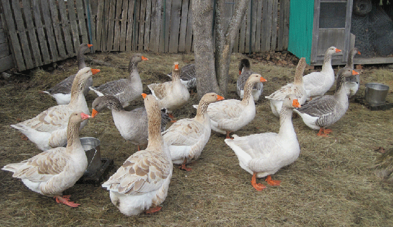
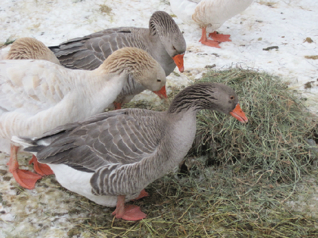
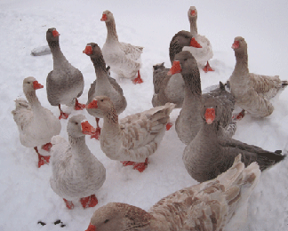
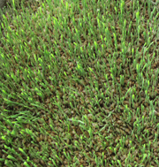
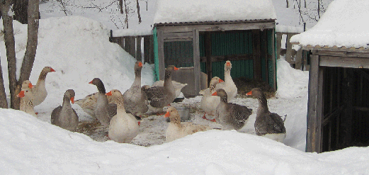

|  | |||||||||||||
| Winter During winter, the geese stay in an area under deciduous trees for protection from flying predators, and for winter sun. Windbreaks to the north and west buffer winter winds. |
|||||||||||||
| They prefer to stay outside all winter, using the goose houses only during blizzards or severe weather. A 4’ cattle panel wire perimeter fence and our dog keep them safe from predators. | |||||||||||||
|  | |||||||||||||
|  | |||||||||||||
| For food during the winter, Geese eat hay and sprouted oats, barley and corn. I collect local apples and grow squash and other root crops, and store them for eating during the winter. |  | ||||||||||||
|  | |||||||||||||
| Geese will drink, wash their heads, and take baths even when the temperature is -27°! I shovel snow from their area and put old hay on the snow and ice as they don’t like cold feet. |
|||||||||||||
| Home | |||||||||||||